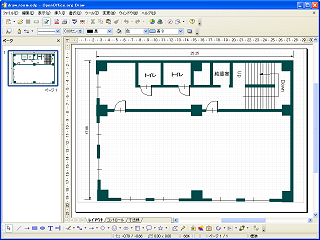
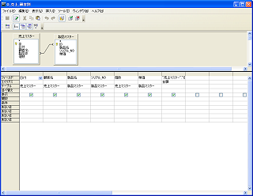

OpenOffice.org
2.0 スクリーンショット
日付：2006年3月12日
ス クリーンショットを用意したので、自由に使ってください。
次のリンクから、画像ファイ ルとサンプルファイルをダウンロードできます。
Writer
| Writer： ワープロ機能 | PDF ファイルとして出力できます |
Calc
| Calc： 表計算 |
Impress
| Impress： プレゼンテーション |
Draw
| Draw： ドローツール | 簡 易DTPツールとしても利用できます |
|  | |
| 簡 易CADとしても利用できます |
Base
|  | |
| Base： リレーショナルデータベース | ク エリーにより複数のテーブルから検索可能 |
制
作者:catch
デザイン:小浦寛裕
デザイン:小浦寛裕